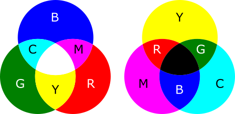
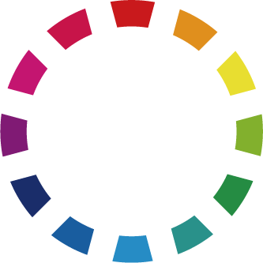
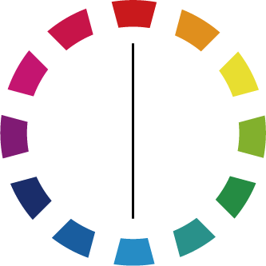
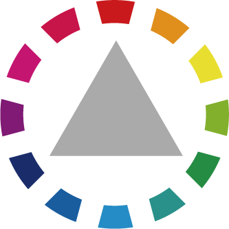
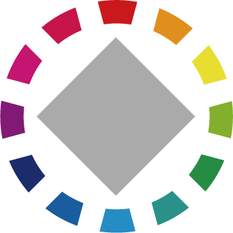

デザインの世界観１（知識）です。
以下の内容は、僕自身がデザインの作業所で見習いとして学び経験したことに基づきます。書いている当時がとても未熟であったため、誤解や勘違いが多くあります。
作業所の同僚やスタッフにも多くのことを教えていただきました。
芸術の世界観とPhotoshopやIllustratorも参照してください。
実際に僕が制作したデザイン作品はイラスト・作品ギャラリーにあります。
僕が思うに、デザインの基本とは視覚に訴えることです。
「視覚効果で伝わることとは何か」ということをよく考えます。
イラスト、飾りつけ、あるいはレイアウトのデザインだけではなく、視覚にどのように訴えるのか、ということを考えれば、おのずと、どのようなデザインが可能であるかが分かります。
僕は、長らく紙面デザインの仕事をやってきて、量をこなすことで分かる部分も増えてきましたが、逆に、分からないことも増えてきました。
「美しさとは何か」という問題を、考えたことはあるでしょうか。
僕は、「本当に美しいものとは何か」という問題が、まだまだ分かりません。
たとえば、グラフィックデザイナーの中で、本当に美しさとは何かが分かっているデザイナーは、ありえない仕事をします。
そのようなデザインが、なぜPhotoshopやIllustratorの白紙の画面から生み出されるのか、誰にも分からないような仕事をするのです。
僕は、そのような、美しいデザインとはなんであるかという問題が、まだまだ分かりません。そのような「ありえない仕事」こそ、僕は学びたいのです。
これは、紙面や紙媒体のデザインだけではありません。たとえば、BMWの車種のデザインはとても個性があって、日本車よりもはるかに美しいです。あのような仕事をできるようなデザイナーになりたいと思います。
紙面デザインの基本は、ずばり「色」「形」「テクスチャ」です。
まず、前提として、文字と背景を配置する領域を考えます。どのように全体を分割し、どこにどのように要素を配置するかを考えます。
そして、デザインする上で基本となるのは、色と形とテクスチャとなります。もちろんほかにも考えるべき要素はあります（イラスト・写真・飾り付け・模様など）が、基本はこの三つです。
色とは、どのような色にするか、ということです。それぞれの項目を色分けしたり、一部の目立つ部分だけを派手な色にしたりします。
形とは、どのような形状にするか、ということです。シンプルな四角形や円を使う以外に、回転をかけたり、一部分あるいは大部分を崩したり欠けたものにしたりすることが考えられます。
テクスチャとは、どのような質感を出すか、ということです。単にテクスチャライザーのような効果をかけるだけではなく、模様のあるパターンにしたり、グラデーションや透明を上手く使います。
このほかにも、たとえば飾り付けをしたり、模様をつけたり、あるいはイラストや写真を上手く配置したりすることが考えられます。
また、ほかに重要なのはレイアウトと余白です。レイアウトとは、配置の並びをどのようにするか、ということです。また、余白は重要です。枠からの距離を上手く取るだけで、綺麗でシュッとしたデザインになります。
これらの基本がきちんと考えて分かるようになれれば、デザイナーの道に一歩近づいたと言えるでしょう。
また、デザインにストーリー性を持たせましょう。単にランダムに配置するよりも、同じテーマのものは同じ場所に、流れとして成り立っているものはその流れが分かりやすいようにし、ストーリーがあるものについてはそれを分かりやすくします。そうすることで、レイアウトがさらに美しく、明瞭になるでしょう。
2022.12.09
2017-09-28より。
デザインの基本として、伝えたい優先順序を決め、伝えるべき要素を大きく、目立つようにしましょう。
フォントは、明朝体、ゴシック体、飾り文字を使います。
出来るだけ特殊なフォントは使わないようにします。
また、同じ字体でも太さの違うファミリーが用意されていることもあります。
欧文のセリフ体は明朝体のような役割、サンセリフ体はゴシック体のような役割があります。
色は、色相は色の違いで、色相環で円のように考えられます。
色相環で反対に位置する色を補色と言って、アクセントカラーなどに使います。
色相環で三角形を取る三色をトライアド、四角形を取る四色をテトラードと言います。
明度は色の明るさで、高いと白に近くなり、低いと黒に近くなります。
彩度は色の鮮やかさで、高いと色が強く出るようになり、低いと無彩色のグレーに近くなります。
明度と彩度が同じぐらいで色相が違うパターンをトーンと言います。
それらを踏まえて、メインカラー、サブカラー、アクセントカラーを決めます。
色は、パソコンではRGB、印刷物ではCMYKを使います。
明度は色の明るさ。明度が高いと白に近くなり、明度が低いと黒に近くなる。
彩度は色の鮮やかさ。彩度が高いとビビット（鮮やかな色）に近くなり、彩度が低いとグレーに近くなる。
写真補正をする際には、たとえば黄色が強く出た写真の場合、イエローの明度を高くしたり、イエローの彩度を低くしたり、補色であるイエローとブルーのカラーバランスを調整したりすることで、その色を飛ばす（黄色として目立たなくする）ことができる。
2023.03.31
以下は参考になる配色パターンのサイト。
CSSも参照のこと。
以下は三原色の基本図。

左が光の三原色（RGB、レッド・グリーン・ブルー）、右が色材の三原色（CMYK、シアン・マゼンタ・イエロー・黒）。
RGBはモニターやデジタル画像データ、CMYKは印刷物やプリンターによく使われる。
RGBとCMYKでは表現できる色の範囲が異なるため、範囲外の色が使われていた場合、変換するとできるだけ同じ色に変換される。このため違和感が出ることがある。
（放送大学「コンピュータとソフトウェア ('18)」を参考に執筆しました。）
2023.03.31編集
Adobe Photoshopなどで写真補正を行う時には、RGBでしか使えないフォトレタッチ機能があるため、写真加工はRGBで行うのが一般的。
印刷をする時にはCMYK対応のプリンターのためにCMYKに変換する場合がある（印刷屋さんに入稿する場合など）。
大量のデータの変換にはPhotoshopの機能であるバッチ（自動定型処理機能）を使う。
プリンターも参照のこと。
2023.03.31
補色は、色相環の対極に位置している色のこと。
補色は、CMYのそれぞれの色がRGBに対応していると考えると分かりやすいです。
| 色 | C（シアン） | M（マゼンタ） | Y（イエロー） |
| 補色 | R（レッド） | G（グリーン） | B（ブルー） |
後日注記：補色は以下に述べるトライアドやテトラードと同様、配色パターンでテーマカラーとなる二色を決める際によく用います。
2023.03.31編集
アメリカの色彩学者ジャッドによる4つの色彩の調和論。（「プロとして恥ずかしくない新デザインの大原則」を参考に執筆しました。）
「一定の法則によって規則的に選ばれた色彩は調和する」という考え方。
以下の配色は色相環において規則的に選ばれた色同士の配色を表す。
| 色 | 説明 |
|---|---|
| アイデンティティー | 同一色相の色のみ |
| アナロジー | 30度あたりの類似色 |
| インターミディエート | 90度あたりの位置にある色同士 |
| オポーネント | インターミディエートとダイアードの色の組み合わせ |
| ダイアード（コンプリメンタリー） | 対向位置にある色（補色） |
| スプリットコンプリメンタリー | 基準色相と補色の類似色を組み合わせた3色 |
| トライアド | 三等分（120度）した3色 |
| テトラード | 四等分（90度）した4色 |
| ペンタード | 五等分（72度）した5色 |
| ヘクサード | 六等分（60度）した6色 |
マンセルの色相環：

補色：

トライアド：

テトラード：

「色相やトーンなどの共通性がある色彩は調和する」という考え方。
| 色 | 説明 |
|---|---|
| ドミナントカラー配色 | 色相の統一 |
| ドミナントトーン配色 | トーンの統一 |
| トーン・オン・トーン配色 | 色相を統一し、明度差を大きく |
| トーン・イン・トーン配色 | トーンを統一し、明度差を小さく |
| トーナル配色 | 中明度・中彩度のダルトーンを中心とした中間色調 |
| カマイユ配色 | 一見単色に見えるほど曖昧で、色相・明度・彩度の差がほとんどない |
| フォカマイユ配色 | カマイユ配色に対して、色相やトーンに幅を持たせる |
「自然界の景色など人間が見慣れた色彩は調和する」という考え方。
ナチュラルハーモニー：黄色の明度を上げ、青の明度を下げると、自然に調和する。自然界では明るい部分は黄みがかっていて、暗い部分は青みがかっているため、見慣れた印象となる。
コンプレックスハーモニー：ナチュラルハーモニーとは逆に、黄色の明度を下げ、青の明度を上げる。自然界で見慣れていないため、斬新な印象を与える。
「色相がはっきり区別できる、または明度が異なる色彩は調和する」という考え方。
ピコロール：コントラストが明快な2色。スポーツのユニフォームなどで良く見られる。
トリコロール：コントラストが明快な3色。国旗などに良く見られる。
フリーフォントはたくさんあります。
以下は具体的にダウンロードできるフリーフォント。
LinuxフォントやIllustrator（文字・テキスト）も参照のこと。
書籍